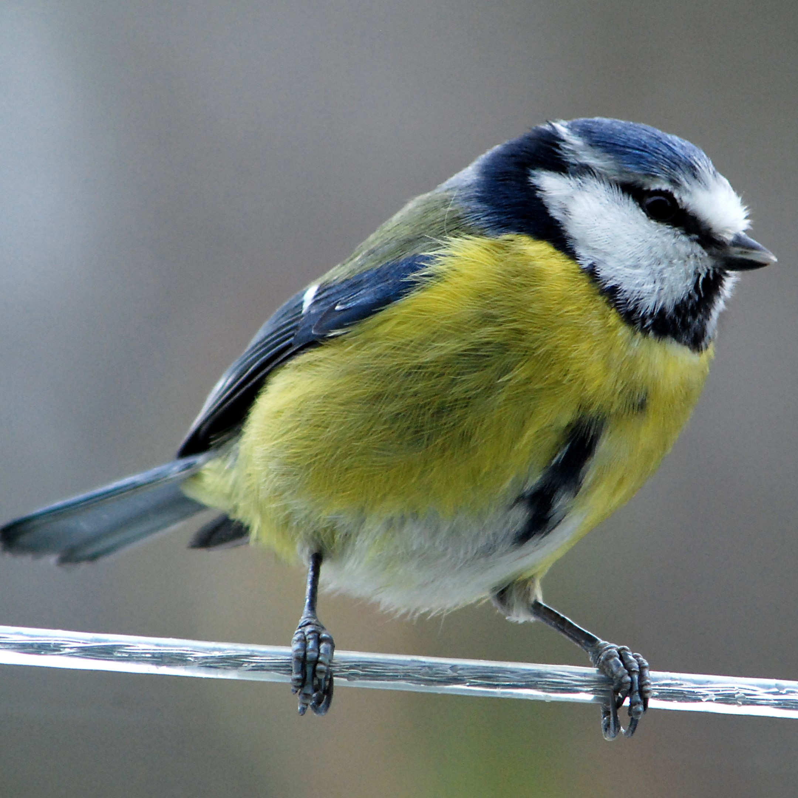
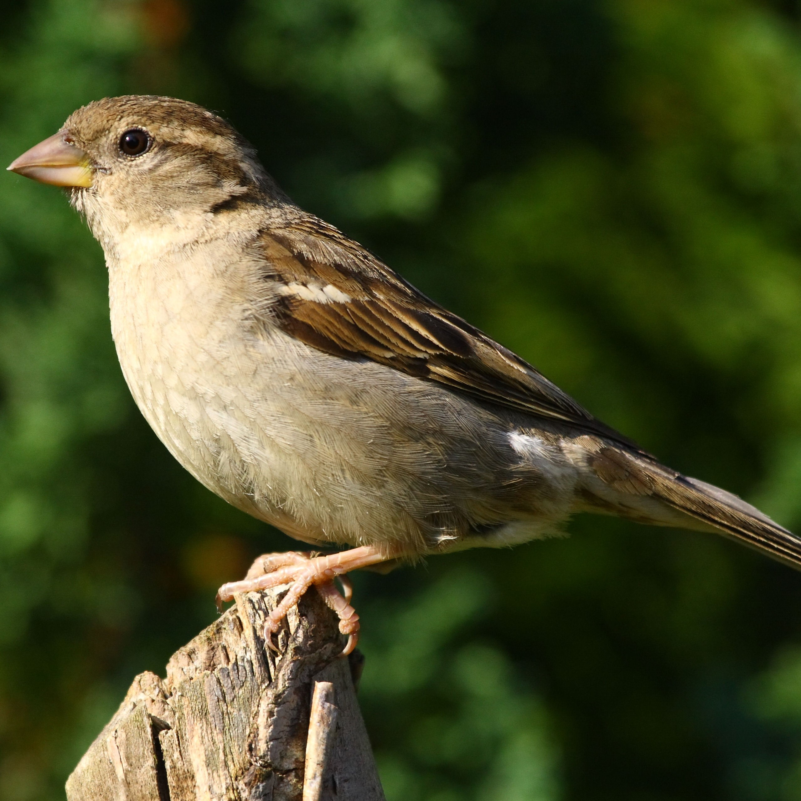
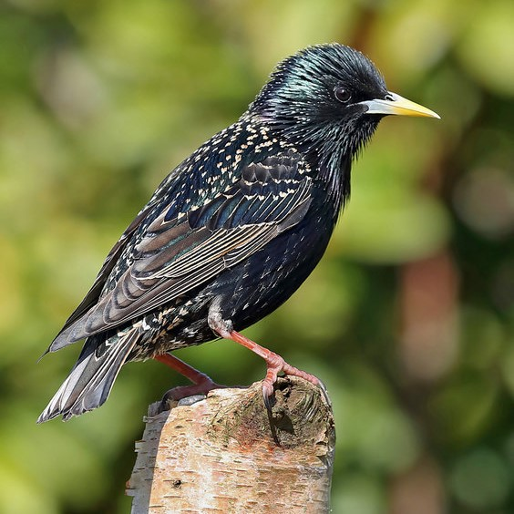
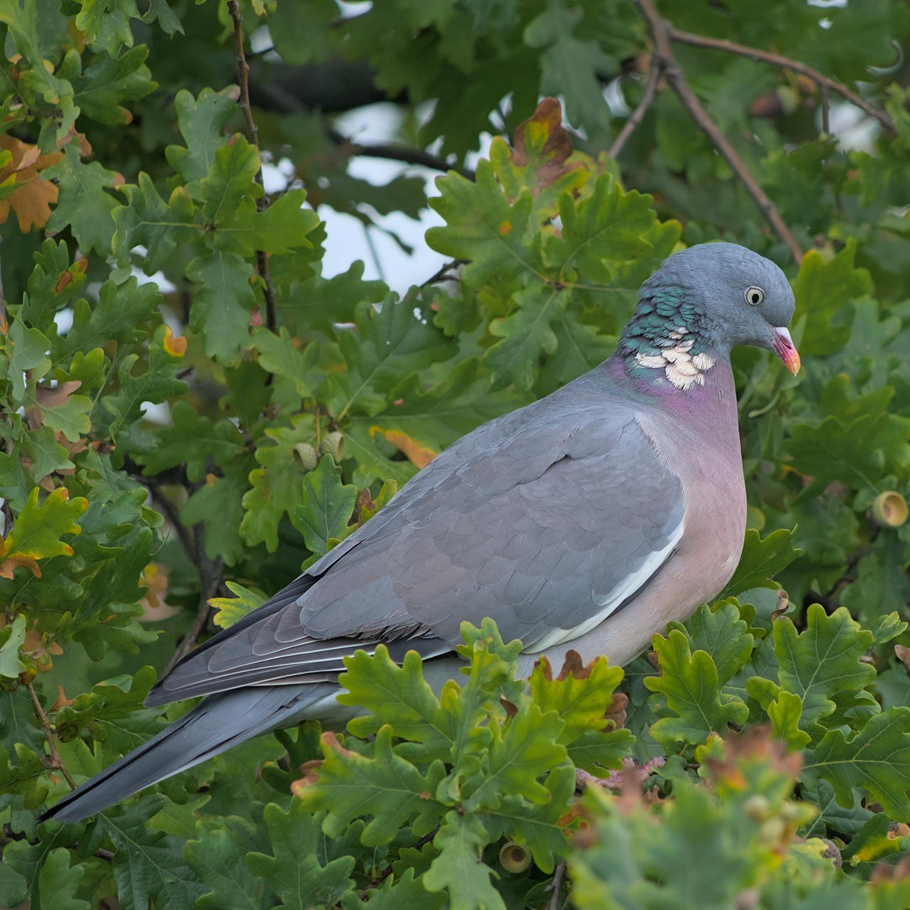
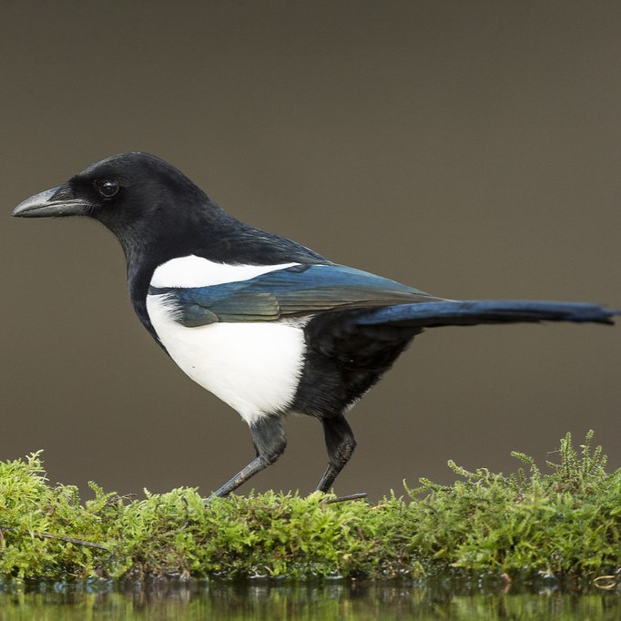
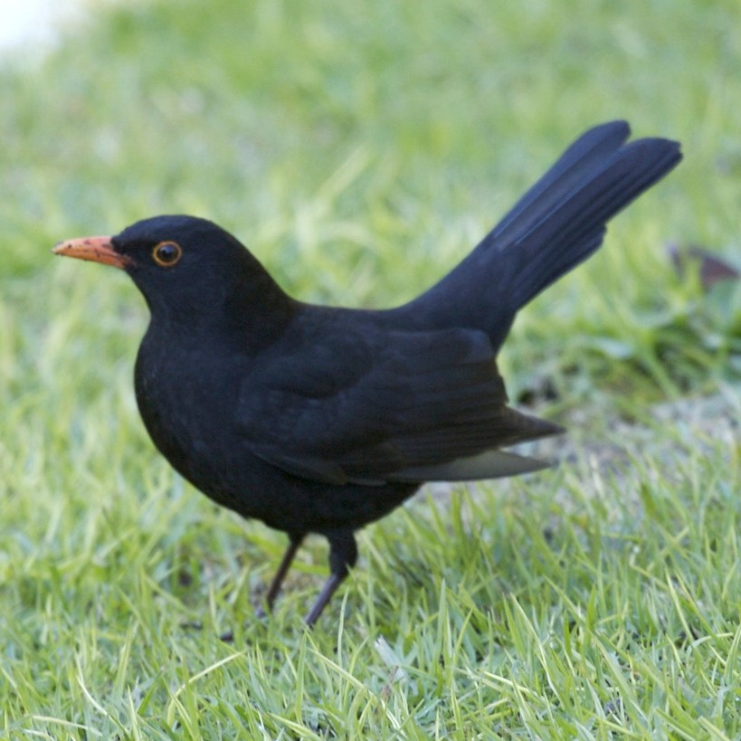
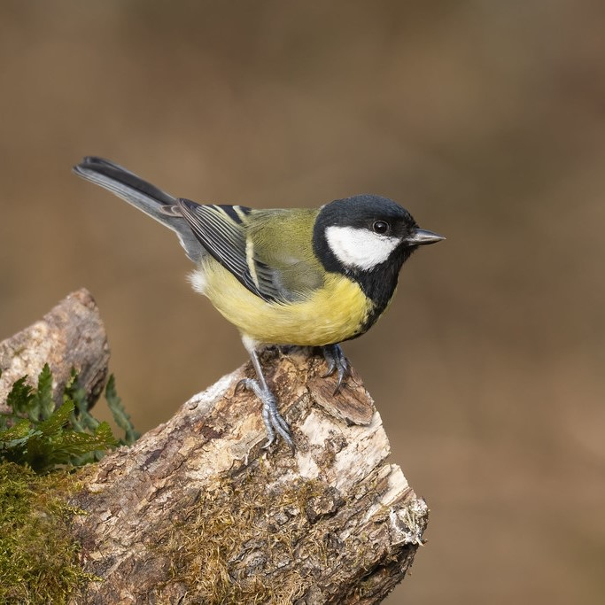
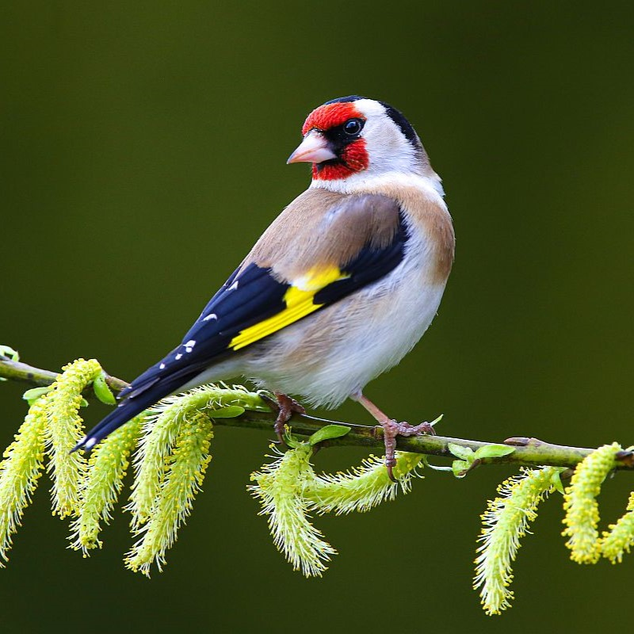

Blue
Tit
The blue tit is a delicate little bird, weighing in at around 11g – half the size of a robin. Often considered our most attractive garden bird, the blue tit is extremely colourful, with a bright blue cap, white face, black stripes across the eyes, bright yellow breast and blue, green and white wings.

House
Sparrow
The House Sparrow has a grey crown, dark chestnut-coloured nape, black throat and off-white cheeks. Black, brownish and reddish streaks on its mantle, brownish-grey back, rump, and upper-tail coverts.

House
Starling
They are stocky black birds with short tails, triangular wings, and long, pointed bills. Though they're sometimes resented for their abundance and aggressiveness, they're still dazzling birds when you get a good look. Covered in white spots during winter, they turn dark and glossy in summer.

Wood
Pigeon
The UK's largest and commonest pigeon, the Woodpigeon is largely grey with a white neck patch and white wing patches, clearly visible in flight. Although shy in the countryside it can be tame and approachable in towns and cities.

Magpie
A magpie is a loud-voiced black and white bird. If someone calls you a magpie, you should probably quiet down. The magpie is a distinctive looking bird, with glossy black and brilliant white markings. Its sound is nearly as striking, famously noisy and almost jarring.

Black
Bird
Male Blackbirds are black with a bright orange-yellow beak and yellow eye-ring. Females are brown often with spots and streaks on their breasts and brown beak. The Blackbird is one of the most common UK birds and one of the most striking. Its mellow song is also a favourite.

Great
Tit
This is the largest UK tit with a distinctive two-syllable song. It has a green and yellow body and a striking glossy black head with white cheeks. It's a woodland bird that has readily adapted to man-made habitats to become a familiar garden visitor.

Gold
Finch
Goldfinch is a colourful finch with a bright red face and yellow wing patch. It's a very sociable bird, often breeding in loose groups. It has a delightful twittering song and call. Their fine beaks allow them to extract otherwise inaccessible seeds from thistles and teasels.